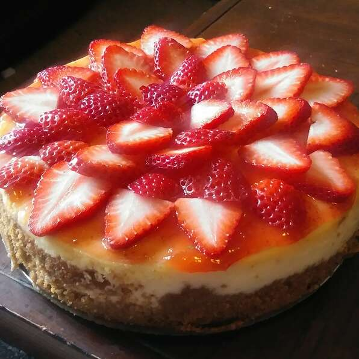

Mom's Cheesecake Recipe
Return Home

Description
This creamy cheesecake is perfectly layered ontop of a graham cracker base with fresh strawberries on top
Ingredients
- 1 & 1/2 cups graham cracker crumbs
- 3 tablespoons white sugar
- 1/2 teaspoon ground cinnamon
- 1/4 cup margarine
- 3 (8 ounce) packages cream cheese
- 1 & 1/2 cups white sugar
- 4 eggs
- 2 teaspoons vanilla extract
- 1/4 teaspoon salt
- 2 cups sour cream
Steps
- Preheat oven to 350 degrees F (175 degrees C). In a medium bowl, combine graham cracker crumbs, 3 tablespoons sugar, cinnamon and melted margarine.
Mix all ingredients well and press into bottom and sides of a 9 inch springform pan.
- In a large bowl, beat cream cheese and sugar until smooth. Blend in the eggs one at a time, then stir in the vanilla and salt.
Fold in the sour cream.
- Pour batter into springform pan. Bake in preheated oven for 1 hour. Turn off oven and leave cake in for at least 30 minutes.